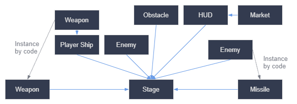
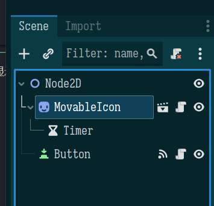
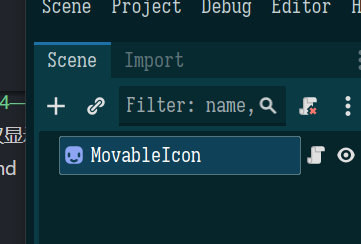

Godot 学习 01——Hello World
这是一个新领域，按我当前的学习方法，笔记中必定会出现各种纰漏，这是没办法的，反正我又不是当老师，对吧？
Godot 是一个全面的游戏引擎，包括代码编辑器、tileMap 编辑器，动画编辑器，shader 编辑器等。Godot 支持 GDScript，C#进行编程，支持和 vscode，vs 集成。
Godot 可以做 2D，3D 游戏，也可以做应用程序，主要用在桌面和移动端，主机端游戏不要考虑 Godot。Godot 支持导入 Blender 场景，
这里的学习是为了找找感觉，所以选择阻力相对更小的 2D 游戏开发，让生活更轻松一些。虽然做独立游戏上 steam，做 JRPG 的话，似乎是 3D 更方便一些，而 2D……做做横版、黄油……？
“If you are new to game development or unfamiliar with Godot, we recommend starting with 2D games. This will allow you to become comfortable with both before tackling 3D games, which tend to be more complicated.”
Learn GDScript in y minutes
事先提出一些问题：
- GD 脚本是如何同游戏世界交互的？
- GD 脚本的运行是同步的吗？有并发情况吗？
- GD 脚本运行过程中，调度权会被抢占用来做其他事情吗？（这关系到编程模型——是像异步编程还是像单片机那样）
这里先剧透第三个问题——不会，但允许手动交出调度权——协程，Godot 支持协程，允许手动让出调度权，并等待 Godot 去恢复它的执行。
观察 Godot 的 yield 的语法，yield(get_tree(), "idle_frame")，容易发现，Godot 的协程让出调度权后，会等待特定实例的特定信号再去恢复调度，显然 Godot 负责调度协程，就像 python 的事件循环负责调度协程一样。这让 Godot 能够无痛地使用同步的方式编写跨帧的代码。
Unity 也使用类似的方法，但没有 Godot 的语法这么轻便，需要使用 IEnumerator，Godot 的 C#则使用 async/await 风格。
在研究 GDScript 之前要明确，GDScript 本质上更是一个领域特定语言——专门为游戏开发服务的，它类似于 python，但同样有许多不同需要注意。
1 | |
上面的足够了，这和 python 基本一致，真正用的时候再去 feel 吧。
关键概念
关于这一节里 Scene 和 Node 的关系，一言以蔽之，任何 Node 都可以是 Scene，Scene 是编辑的根节点，保存的原子，可以说 Scene 就是保存到硬盘的 Root Node。下面扯一堆很抽象的东西，不如直接从使用上来看。
来自：https://docs.godotengine.org/en/stable/getting_started/introduction/key_concepts_overview.html。
下面的内容我觉得肯定有错误的地方，在实践中继续深化吧。
Scene 是组织游戏的基础，是游戏的最小的封装单元，一个角色、一个武器、GUI 中的一个菜单，一个房子，一个关卡，乃至任何东西，都是 Scene。注意到，Godot 的 Scene 比 Unity 的 Scene 更广泛一些，所谓的 Prefab 在 Godot 中也是 Scene。
Node 则是组织游戏的最小单元，Scene 本质上也是 Node，是由一个或多个 Node（或 Scene） 组合（组合 vs 继承的那个组合）而成的。Scene 的特殊性在于 Scene 可以作为根节点，并按整体去进行操作。
无法单独地实例化一个 Node（实际上是可以的，但一般来说没意义），而只能实例化一个 Scene（换句话说，Scene 是可实例化的最小单元），实例化 Scene 时它的所有 Node 跟着实例化，也就是说 Scene 管理着它包含的 Node 的生命周期。
我们通常都会谈论 Scene 而非 Node，因为 Scene 相对来说是贴近“业务”的，Node 则相对更“底层”。很难为 Scene 和 Node 的关系找到一个合适的比喻……
Scene 是一个树结构，称作 Scene Tree，这个 tree 同时也包含所有 node，但我们通常谈论 Scene。
注意——Scene Tree 有两个——Remote 和 Local，Remote 代表运行时的，Local 代表保存时的。
容易想象，在每一帧中，Godot 都要遍历 Scene 树，把所有 Node 的逻辑都执行一次，并将结果反映到现实世界，比如对 3D 物体的绘制节点，Godot 就会把它们的信息缓存下来，在渲染阶段发送给图形处理库进行渲染；比如对动画节点，Godot 就会根据动画关键帧去计算动画属性并更新场景。
从程序员的角度来看，可以把 Node 认为是一种数据（即使它是像动画、音频这样看起来是“可执行的”，如果要找到类似的概念的话，那就是矩阵——矩阵可以当作函数看待也可以当作数据看待），我们编辑它的时候，是编辑它的初始值，它的数据会在运行时改变，而决定如何使用节点是 Godot 自己的工作。
这里有两种心智模型——Node 是纯数据，Godot 负责解释这个数据；Node 是根据配置（数据）动态生成可执行代码的工具，Godot 负责执行它。前者适用于引擎的使用者（我），后者适用于引擎的开发者，关注引擎本身的实现细节，后者可能也更贴近实际。
Signal 是不同的 Node 的一种通信手段，它是一种发布订阅模式，允许多个接受者，优势是松耦合，不需要事先知道发送者、接受者是谁。Signal 不是唯一的通信手段，但是它比较底层，可能会是最常用的。（官方文档说 Signal 是观察者模式，但观察者模式的话发送者知道所有的接受者啊）
回到 Node，Node 允许有子 Node，Node 可以继承自其它 Node（不能多继承，但有接口）。有子 Node 的 Node 就是 Scene
在 Godot 中，继承和组合都被使用，继承被用于在父类基础上做扩展，而组合是更推荐的方式——Godot 甚至给获取子节点提供简写语法，Scene 实际上就是一种子 Node 的组合。Node 负责基础功能，Scene 则是一个复杂的，可以直接复用的实体。
实际上，Scene 也是持久化的原子，Scene 可以保存到硬盘供重用，Node 则不能。这是一个很好玩的地方——关卡、敌人、地图，都是 Scene，Godot 对待它们没有什么区分，落盘也是一样的落。
Scene 也是我们编辑的对象——编辑器中的标签页，它对应的是 Scene，比如这个窗口打开的是整个关卡 Scene，另一个窗口则看的是某个敌人的 Scene。Scene 之间是引用关系，这个 Scene 的修改会反映到引用它的 Scene 上（不全是，比如位置、缩放等信息的话可能不会反映，以及引用者能配置说自己要做本地化修改，这时候就不会反映）
此外，Node 可以和 gd 脚本（也是落盘的原子）绑定，其中对 gd 脚本 extends 的基类有要求——脚本只能和 extends 的类及其子类的 Node 绑定。Node 和 gd 脚本也是引用关系。
一个项目需要设置一个 main scene，但任意 scene 都能够单独运行。project-Project Settings-Run 能够设置 main scene。
scene 保存的文件后缀为tscn text scene，我们将其称为 packed scenes。scene 可以任意地实例化，实例化后，它就能有自己的属性了，覆盖默认值。
比如，在例子中的 Ball 有 RigidBody2D，用于物理模拟，我们能直接调整它的 Mass，然后对于 Physics Material，不能修改相应属性，但可以配置去创建一个 override，然后就能够修改了。这里很有意思——是否这是一种“浅拷贝”？嵌套的配置就不能修改（因为它是直接引用到 Scene 上的），这里需要处理。然而或许不需要这么思考……？PhysicsMaterial 是一个 resource，resource 需要 unique 才能修改。
在思考游戏结构时，要通过 Scene 之间的关系去思考——用户（好吧，我是说，玩家，哈哈哈）能看到哪些元素？通过这种方式，我们便能够使用图像表达游戏结构。

Hello, World!
在左上角打印 Hello, World，以及当前游戏进行的时间，作为开头吧。注意到两个生命周期函数。
1 | |
有几个值得关注的地方：
- 这里的 Label.new，内部是创建后调用了
_init……怎么说呢，脑子里还是扔掉 Python 吧，不要拿来和 GD 做对比 - 不同函数之间共享内容的话需要在顶层定义没有初始值的变量
- 修改 Node 的参数后，它马上就会反映到画面上，不需要手动刷新
下面是另一个示例，创建 Sprite2D（在以前做 gal 的时候见过这个术语，sprite，精灵，绘制的东西），显示 godot 的 logo，并绕一个位置进行旋转。
1 | |
注意示例开头的extends Sprite2D，我们知道，脚本是绑定在 Node 上的，而非独立存在，那这里“继承自 Sprite2D”又该如何理解呢？实际上，一个脚本不止可以继承 Node，也可以继承另一个脚本。
可以认为脚本是一种动态、可插拔的 mixin，用来增强、修改原 Node；脚本继承脚本则是去再度修改被修改过的 Node，即递归增强。而实际上，脚本自己也可以成为节点显示在 Godot 中供直接重用（这时候就不需要自己绑定脚本了），甚至能够在界面中配置相应参数。
显然，extends 语句的存在会让脚本对支持的 Node 有要求，实际上，脚本只能绑定在继承的类的子类上，如继承 Node，就能绑定到所有 Node 的子类上如 Sprite2D，这是可以理解的——我只能用 Node 中的内容，而 Sprite2D 有 Node 中的所有内容。
官方文档中解释，extends Sprite2D表示能够 “get access to all the properties and functions of the Sprite2D node, including classes it extends, like Node2D, CanvasItem, and Node.”，它不是拥有，是能够访问……行吧，怎么理解都行。
最后悄悄提一句——没有 extends 时，会默认继承 RefCounted（而非 Object），这个类显然用于内存管理。
Inspector 中，即查看和编辑 Node 的属性的窗口，命名是 Title Case，单词首字母大写，空格分割，而代码中命名则是下划线分割，这也是 gd 的变量、函数命名的规范，和 python 一致。
监听用户输入
让游戏真正成为游戏的第一步——让用户能操作，而非看动画 w。
要监听用户输入，有两种方式——重写相应的虚方法，如_unhandled_input等（有多个，有执行顺序等问题，后面再细学），也可以直接使用Input单例去检查。这里图简单使用后者。注意这里的奇怪的说法，action pressed（按下一个动作？？），这个奇妙的说法是否是解耦特定输入设备，甚至能自己做抽象？
注意这里的&'ui_init'，&是 StringName 的简写法，StringName 取自全局的字符串池，以供字符串快速比较，同时避免重复创建相同字符串影响性能。
1 | |
旋转有顺时针逆时针的问题，笛卡儿坐标系中，默认是逆时针转动，Godot 中是顺时针转动。
如何理解它呢？认为从 x 正方向到 y 正方向是角度增加 90 度的方向，此时，笛卡儿坐标系中是逆时针，Godot 做坐标系中是顺时针。
使用 signal
我们有个节点树，脚本绑在这个树的任意节点上，且能够直接访问子节点实例；那两个没有直接层级关系的节点怎么交互呢？比如敌人发射的子弹和主角和显示在左上角的生命值条，我该如何把它们互相交互？signal 是一个手段。
signal 是一等公民，即它可以像变量那样当成参数传递，它还有其他特性：
- Godot 直接提供语法去定义 signal，
signal button_pressed(value: int) - 信号既可以动态绑定，也可以直接在 Godot 编辑器中绑定并保存到场景文件
- 信号支持参数（但是补全不行，至少对信号的发送者来说是如此）
- 可以使用 await 语法等待信号
这么看来，信号有点像 Qt 的信号与槽机制，它既可以用在跨节点的通信上，也可以用在自己内部通信。
直接在编辑器中绑定的话，感觉这也是一种耦合，但在简单场景用它感觉也无可厚非。
这里是一个例子用来停止 icon 的运动，如何停止呢？设置 process 状态为 False，这样 Godot 就不会调用它的_process了。
1 | |
下面是一个手动 connect 的例子，在 icon 下面加一个 Timer，然后连接它的 timeout，奇异的是这里的语法和 qt 一模一样，故意的吧！？
但是这里有一个更有趣的问题——我要昏厥了：


注意到，在第一个 Scene 中，MovableIcon，我们在它下面挂了 Timer；而在第二个 Scene 中，它就是 MovableIcon，它下面却没有挂……
这证明，Scene 在使用时会被当成原子的 Node，在定义时才会被进一步拆分……另外也发现，挂载到 Scene 的根节点的 Node 上的脚本也是资源——使用该 Scene 的人能够移除该脚本，也能替换或继承它重新换一个脚本。
从昏厥中恢复过来，开写，注意timer可以是一次性也可以是可复用的，而且默认配置是需要手动在代码中start的。
1 | |
然后是最后一个例子，展示如何自定义signal并emit。signal总是用动词的过去式，被动。
1 | |
Step By Step课程结束喽，然后是第一个2D游戏。
本博客所有文章除特别声明外，均采用 CC BY-NC-SA 4.0 协议 ，转载请注明出处！